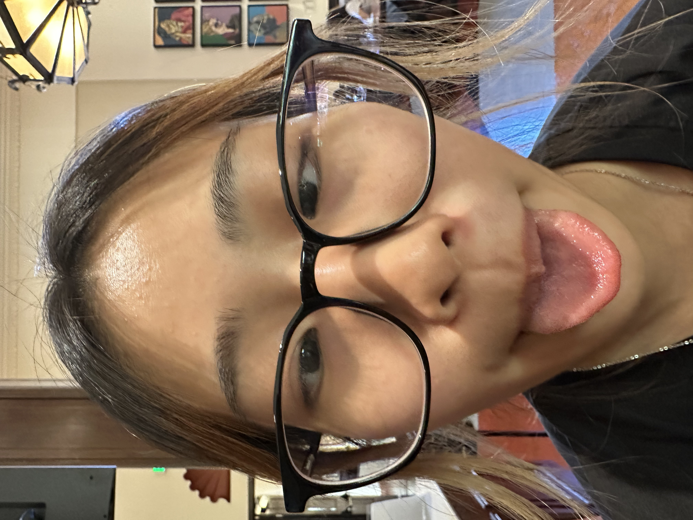
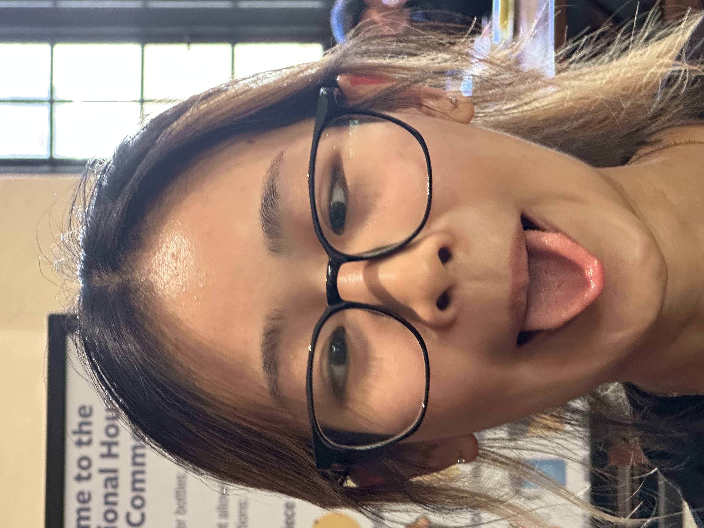
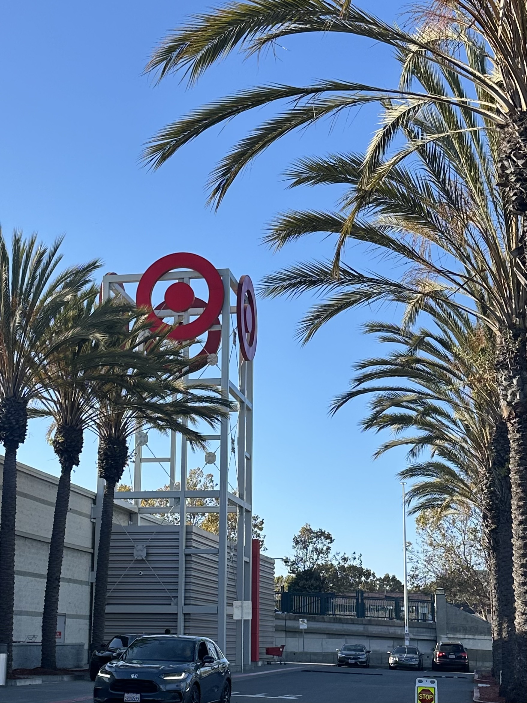
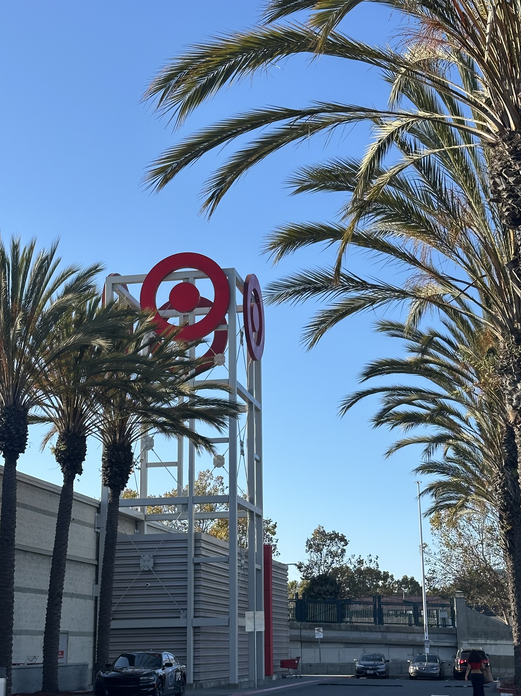
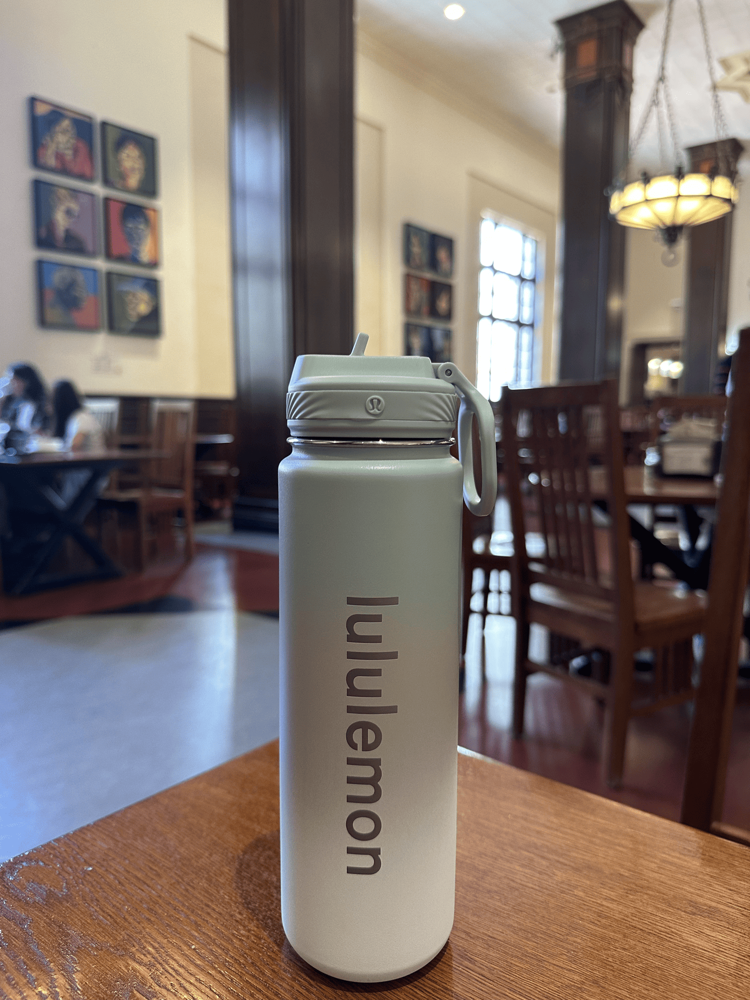

Part 1: Selfie — The Wrong Way vs. The Right Way
In this experiment, I got a friend to take a photo of me close up, followed by another photo of me further away, but zoomed in, such that my face remained approximately the same size as the first picture. We can observe that my face looks distorted when the picture was taken close to my face, making my face appear wider. When the picture was taken from a further distance, I looked much more natural and more proportionate with less distortion to my facial features.


Part 2: Architectural Perspective Compression
In this experiment, I photographed a target pillar from far and zoomed in, then walked closer to the pillar such that it appears approximately the same size as the first image. When the photo was taken from a greater distance, we can observe that the pillar looks slightly flatter and more compressed, whereas when I went closer to the pillar, the front of the pillar appeared larger and the sides of it appear further than before.


Part 3: The Dolly Zoom
For this experiment, I used by bottle as the subject and took 8 photos of it, moving my camera further from it while zooming in, making sure to keep the bottle about the same size for each image. This was then converted into a gif. We can observe a warping effect where the background seems to stretch.
